六安：追寻革命先烈的足迹
-
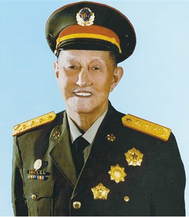
久经考验的忠诚的共产主义战士，无产阶级革命家
洪学智（1913—2006），安徽金寨人。1929年3月参加革命，同年5月加入中国共产党。 [1] 在革命生涯中，历任班长、排长、连长、营政委、团政治处主任、师政治部主任、军政治部主任、副师长、军区副司令、军区司令、纵队司令、军长、兵团副司令等职，参加了长征、辽沈战役、平津战役、渡江战役等。中华人民共和国成立后，历任中国人民志愿军副司令员兼后方勤务司令部司令员、总后勤部部长、省农机厅厅长、重工业厅厅长、石油化工局局长、国务院国防工业办公室主任、总后勤部部长兼政委、中央军委副秘书长、政协副主席等职。参与指挥了解放海南岛战役、万山群岛战役、抗美援朝等。1955年和1988年两次被授予上将军衔。2006年11月20日在北京病逝。
-
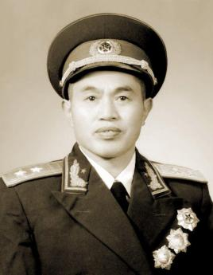
豫西抗日显英雄,中原突围创奇迹
皮定均（1914.8.30—1976.7.7），中华人民共和国开国中将，安徽省金寨县代家岭人。在军旅生涯中，历任红军连指导员、营教导员、红军大学上级指挥科副科长、步兵学校营长、教导师第2团团长、八路军第129师特务团团长、军分区司令员、支队司令员、纵队旅长、纵队副司令员、野战军副军长、野战军军长等职。先后参加了鄂豫皖苏区反“围剿”、川陕苏区反“围攻”、长征、中原突围、孟良崮战役、莱芜战役、豫东战役、淮海战役、渡江战役等。中华人民共和国成立后，历任解放军24军军长、志愿军第9兵团军长、福建军区副司令员、福州军区副司令员、兰州军区司令员、福州军区司令员等职，参加了抗美援朝战争。1955年被授予中将军衔。1976年7月7日在福建指挥军事演习时不幸遇难殉职，年仅62岁。
-
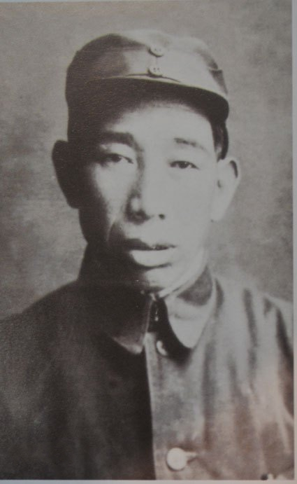
一代战将杨国夫 带出叱咤黑土地的“攻坚老虎师”
杨国夫，一九二八年加入中国共产主义青年团。一九二九年参加中国工农红军。一九三○年转入中国共产党。土地革命战争时期，任红军游击队分队长、特务队队长，红四军第十二师三十五团连长，第十师三十团副营长、营长，红三十军第九十师二六九团副团长、二七○团团长。抗日战争时期，任八路军山东人民抗日游击第三支队副司令员、司令员，山东纵队第三旅副旅长，清河军区司令员，渤海军区司令员兼第七师师长。解放战争时期，任东北民主联军第七师师长，第六纵队副司令员，第四野战军四十三军副军长，江西军区副司令员。中华人民共和国成立后，任中南军区第一文化速成中学副校长、校长，济南军区副司令员、顾问。一九五五年被授予中将军衔。是第四届全国人民代表大会代表，中国人民政治协商会议第四届全国委员会委员，第五届全国委员会常务委员，山东省政协第四届委员会副主席。
-
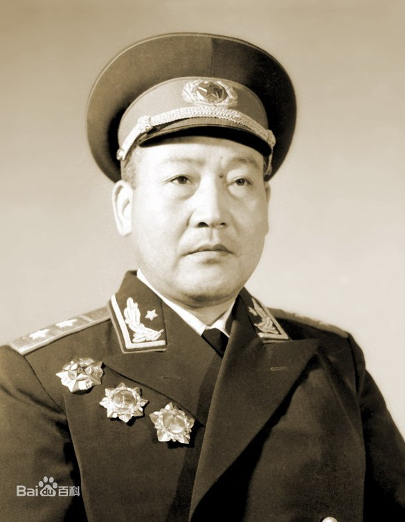
打仗就是玩命，敢上战场，我就没打算活着下来！
李耀（1911-2003），1928年加入中国共产主义青年团，1930年10月转入中国共产党。土地革命战争时期，他历任班长、排长、连长兼政治指导员、营长兼政治委员、大队政治委员、兵站医院政治委员、科长等职，参加了香火岭、郭家河、瓦屋基、镇安、袁家沟口、独树镇、四坡村、西峰镇等战役战斗，参加了鄂豫皖苏区一至五次反“围剿”斗争和红军长征。中华人民共和国成立后，任中国人民解放军第一步兵学校政治委员，总后勤部干部部部长，总后勤部政治部主任，总后勤部副政治委员。一九五五年被授予中将军衔。是中国人民政治协商会议第三、四、五届全国委员会委员，中国共产党第七次全国代表大会代表。在中国共产党第十二次全国代表大会上被选为中央纪律检查委员会委员
-
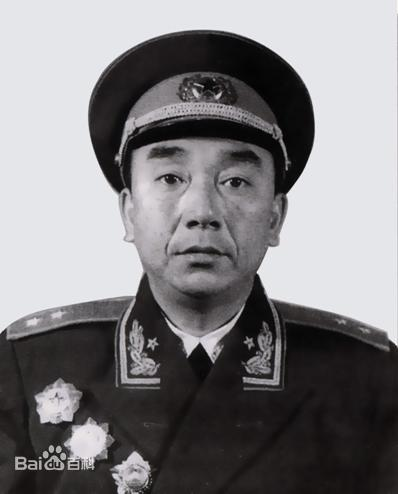
百战将星张贤约
张贤约（1911—2002），安徽省金寨县人。1929年10月参加中国工农红军，参加了土地革命、抗日战争和解放战争。中华人民共和国成立后，任第一野战军第6军政治委员兼迪化（今乌鲁木齐）军区政治委员。完成了剿匪、改造起义部队、守卫边防和参加新解放区建设任务。1951年后，任西北军区空军副司令，西北军区后勤部部长兼政治委员，总后勤部汽车拖拉机管理部部长，总后勤部副部长。是第六届全国人大常委会委员。1955年被授予中将军衔,1945年6月，率部担负爷台山反击战主攻任务，保 卫陕甘宁边区。解放战争时期，他历任纵队副司令员、副军长、军政治委员，率部参加延安保卫战，与敌激战七昼夜，同兄弟部队一起，掩护中央机关安全转移。他率部参加了青化砭、羊马河、蟠龙镇、陇东、三边、榆林、沙家店、岔口等战役战斗。
-
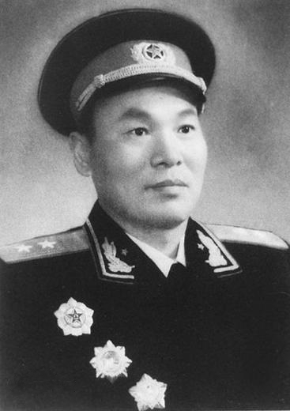
一个医生眼中的将军
陈先瑞（1914年-1996年），安徽省金寨县人。15岁参加红军，土地革命战争时期，历任红二十五军手枪团中队长、二二四团营政治委员、二二三团政治处主任，鄂陕边游击与李隆贵、郑位三、程子华、徐海东合影与李隆贵、郑位三、程子华、徐海东合影 总司令，红七十四师师长。抗日战争时期，历任八路军一一五师留守处主任，陕甘宁留守兵团警备第四团团长，警备第一旅副旅长，河南人民抗日军第三支队司令员兼政治委员。放战争时期，历任中原军区第五师十五旅政治委员，豫鄂陕军区副司令员兼参谋长，西北民主联军第三十八军副军长，豫西军区副司令员，陕南军区副司令员，第十九军副军长.
-
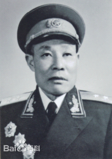
出生入死，8次负伤，毛泽东曾称赞他为“游击专家
林维先（1912-1985）安徽省金寨县人。一九二九年参加中国工农红军。一九三○年加入中国共产主义青年团，一九三二年转入中国共产党。土地革命战争时期，任鄂东游击总司令部特务营班长，红二十五军第七中将军衔,中将军衔 十四师特务连政治指导员，第二二二团营政治委员、团政治委员，皖西红八十二师师长，红二十八军参谋，第二二四团营长、副团长。抗日战争时期，任新四军第四支队参谋长、司令员，新四军教导总队第九队队长，第一大队队长兼军部特务营营长，新四军第三支队参谋长兼挺进团团长，第七师副参谋长兼皖江军区副参谋长，沿江支队支队长兼中共沿江委书记，新四军第七师十九旅旅长。解放战争时期，任新四军第七师参谋长，华东野战军第七纵队副司令员，华东军区后备兵团司令员，淞沪警备区副司令员。中华人民共和国成后，任华东军区公安部队副司令员，浙江军区司令员，南京军区副司令员兼参谋长，武汉军区副司令员。
-
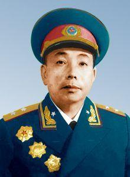
徐立清力辞上将，高风亮节
徐立清（1910.4.5-1983.1.6），中华人民共和国开国中将、中国政治工作领导人 [1-2] ，安徽省金寨县人。1929年参加红军，1930年加入中国共产党。在革命生涯中，历任红军师政治部组织科科长、团政治处主任、师政治部主任、军政治部主任、红四方面军总医院政治部主任、红四方面军总卫生部政委，八路军师政治部组织股股长、政治部组织部部长、纵队政委、旅政委，陕甘宁晋绥联防军政治部主任、西北野战军政治部主任、纵队政委，军政委、兵团副政委等职。参加了鄂豫皖反“围剿”、川陕苏区反“围剿”、长征、转战河西走廊、冀南区反“扫荡”、爷台山反击战、延安保卫战和解放西北等战役战斗。
-
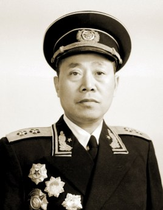
将军横扫千军，英魂冷对奸雄
陶勇，1913年1月21日生于安徽省霍邱县（（今六安市叶集区）,一个贫苦农民家庭。幼年丧父，7岁被迫给人放牛；1929年2月加入中国共产主义青年团，同年4月到河南商城参加游击队。1932年5月转入中国共产党。曾任红11军32师班长、排长、连长。1931年春任鄂豫皖保卫局保卫队队长，6月起任红4军第12师35团2连副连长、连长，1营副营长。参加了鄂豫皖苏区历次反“围剿”和红四方面军西征入川作战。1932年11月起任第10师28团2营营长、副团长、团长，率部参加了开辟川陕苏区的斗争和反“三路围攻”、反“六路围攻”作战。随红四方面军长征到陕北后，任红9军教导师师长。
-
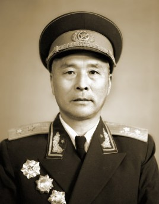
身经百战,劳苦功高
梁从学，一九二九年加入中国共产党。一九三零年参加中国工农红军。土地革命战争时期，任六安独立第七团班长、排长，红二十五军第七十四师二二二团连政治指导员，红二十八军第二四四团合影， 副连长、连长、营长，第八十二师师长，红二十五军第七十四师师长，鄂东北独立团副团长，红二十八军第二四四团团长，黄岗游击队队长。参加了南方三年游击战争。抗日战争期，任新四军第四支队游击纵队纵队长，第十四团团长，新四军津浦路西联防司令部司令员，第二师四旅旅长。解放战争时期，任新四军新二师副师长兼参谋长，淮南军区副司令兼参谋长，华东野战军伤员归队处处长，江淮军区副司令员，皖北军区副司令员。中华人民共和国成立后，任皖北军区司令员，江苏军区副司令员。一九五五年被授予中将军衔。皖北各界人民代表会议协商委员会副主席，中国人民政治协商会议第二届全国委员会委员。
-
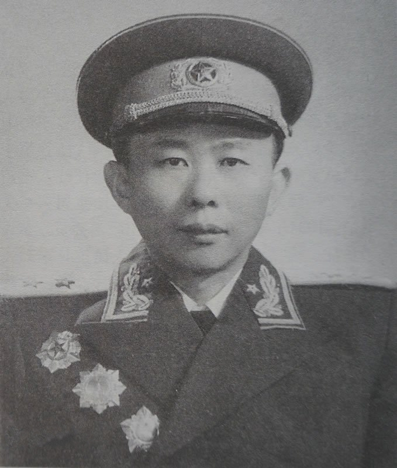
官至沈阳军区政委，生活却很寒酸
曾绍山,1929年参加中国工农红军。同年加入中国共产主义青年团 [1] 。1933年转入中国共产党。曾任第四军政治部少年宣传队队长、师政治部秘书、师司令部参谋。参加了鄂豫皖、川陕苏区反“围剿”和长征。抗日战争时期，任八路军一二九师旅作战股股长、旅参谋长，太行军区副旅长兼分区司令员、分区政委兼中共二地委书记。参加了夜袭阳明堡和百团大战。解放战争时期任晋冀鲁豫军区纵队副司令员、皖西军区司令员、第三兵团军长。参加了上党、进军大别山、渡江、西南等战役。1950年后，任第三兵团兼川东军区副司令员。1951年参加抗美朝，任中国人民志愿军军长、兵团副司令员。回国后，历任旅大警备区司令员，沈阳军区副司令员、政委，济南军区顾问。
-
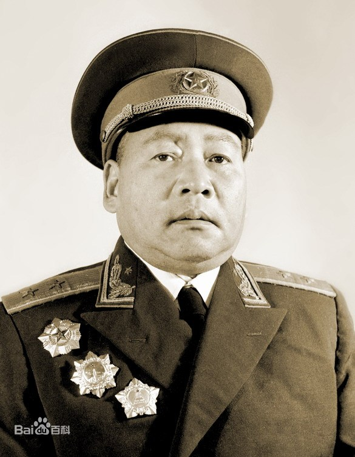
一位驰骋战场的骁将
梁从学，一九二九年加入中国共产党。一九三零年参加中国工农红军。土地革命战争时期，任六安独立第七团班长、排长，红二十五军第七十四师二二二团连政治指导员，红二十八军第二四四团合影， 副连长、连长、营长，第八十二师师长，红二十五军第七十四师师长，鄂东北独立团副团长，红二十八军第二四四团团长，黄岗游击队队长。参加了南方三年游击战争。抗日战争期，任新四军第四支队游击纵队纵队长，第十四团团长，新四军津浦路西联防司令部司令员，第二师四旅旅长。解放战争时期，任新四军新二师副师长兼参谋长，淮南军区副司令兼参谋长，华东野战军伤员归队处处长，江淮军区副司令员，皖北军区副司令员。中华人民共和国成立后，任皖北军区司令员，江苏军区副司令员。一九五五年被授予中将军衔。皖北各界人民代表会议协商委员会副主席，中国人民政治协商会议第二届全国委员会委员。
-
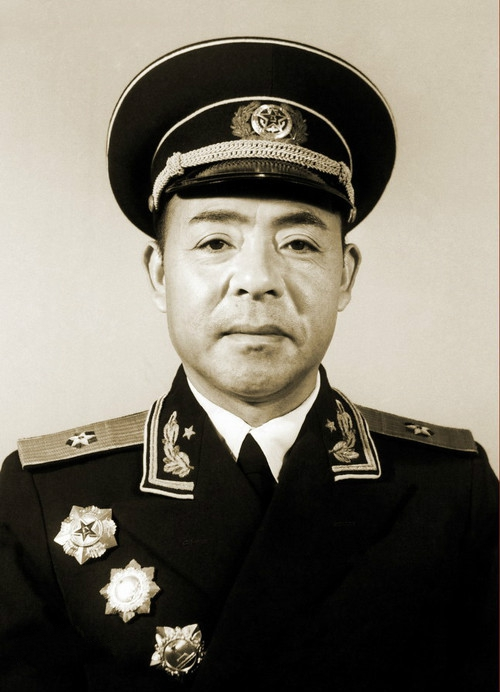
他立场坚定，对党的事业忠心耿耿，不愧为党的好儿子
丁世方（1912—1965.6.23），中华人民共和国开国少将，安徽金寨人。在军旅生涯中，历任少共宣传部长、红四军总医院中医部主任、红四方面军中医院院长、军委第三后方医院院长、南满安东军区卫生部部长等职。先后参加了鄂豫皖反“围剿”、川陕苏区反“围剿”、长征、西路军西征、临江战役等。中华人民共和国成立后，历任医大三分校校长，海军卫生部副部长、部长，海军后勤部部长，总后勤部卫生部部长等职，创办了海军第二医科大学。1955年被授予少将军衔。1965年6月23日，在北京游泳中因心脏病发溺水逝世 [1] ，享年53岁。
-
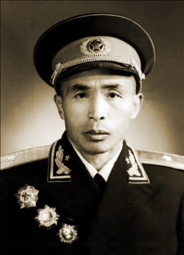
受革命思想影响，参加了少年先锋队
卜万科（1910.03-1969.03），中华人民共和国开国少将，安徽省金寨县洪冲乡人。红军班长、连长、营长、副团长、师参谋长、团长，八路军营长、副团长、团长，解放军副旅长、军分区副司令员等职。先后参加了鄂豫皖革命根据地第一、二、三、四次反“围剿”斗争，反“三路围攻”、反“六路围攻” [1] ，仪南战役、营渠战役、宣达战役、强渡嘉陵江战役，长征，抗日战争，中原突围、豫东战役、淮海战役等。中华人民共和国成立后，任河南军区信阳军分区司令员，率部配合地方剿匪反霸，建立政权，发展地方武装。1955年被授予少将军衔。 [2] 1969年3月，在武汉病逝，享年59岁。
-
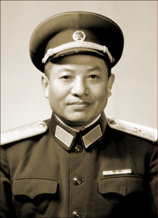
一颗火红的心
徐光友（1917—2003）安徽省六安市人，一九二九年加入中国共产主义青年团，同年参加中国工农红军，一九三五年由团转入中国共产党。土地革命战争时期，任红二十五军第七十三师师部通信排排长，红十五军团政治保卫连连长，教导团连政治指导员。参加了长征。抗日战争时期，任八路军一一五师三四四旅六团营政治教导员，六八九团政治处组织股股长，六八八团政治处副主任，皖东北独立团团长。解放战争时期，任华中野战军第七纵队五十五团团长，五十九团团长，华东野战军一纵队三十三旅参谋长，第三野战军二十九军八十六师副师长。中华人民共和国成立后，任中国人民解放军师长，副军长，南昌步兵学校校长，军政治委员，北京军区政治部主副政治委员，中国人民解放军工程兵副政治委员。一九六一年晋升为少将军衔。